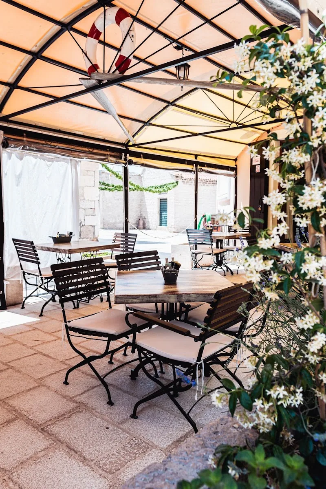
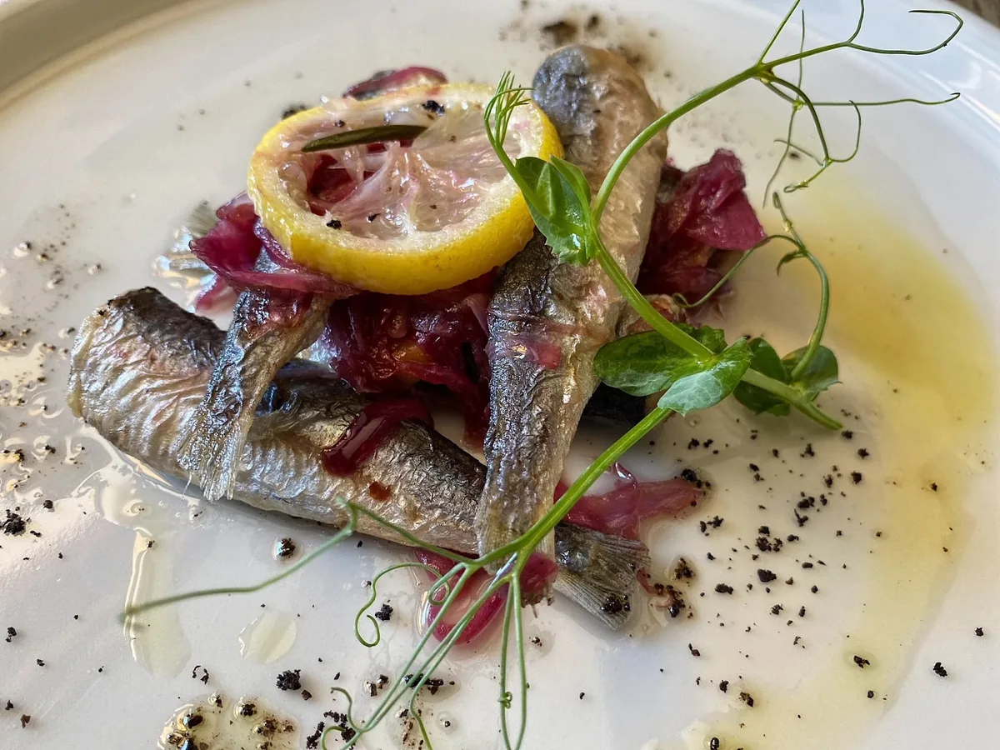
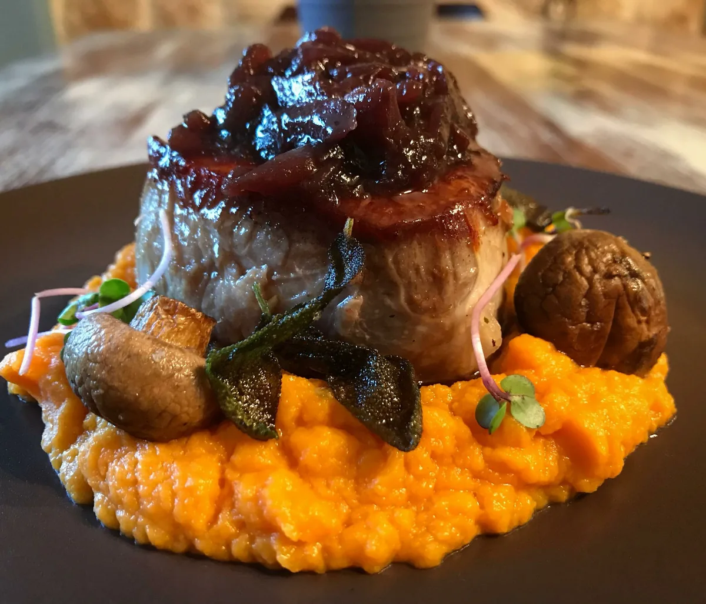
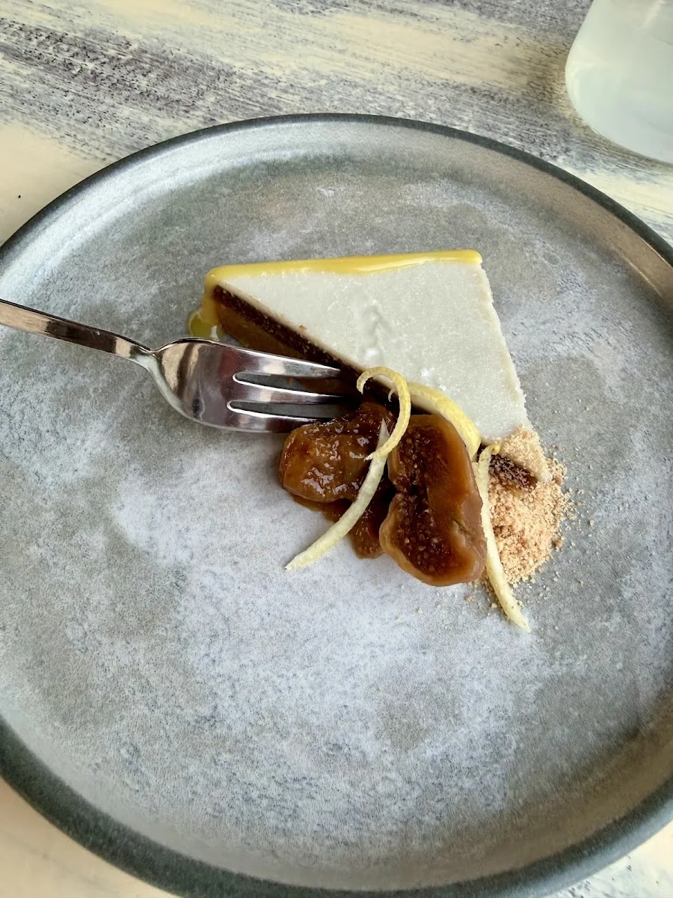
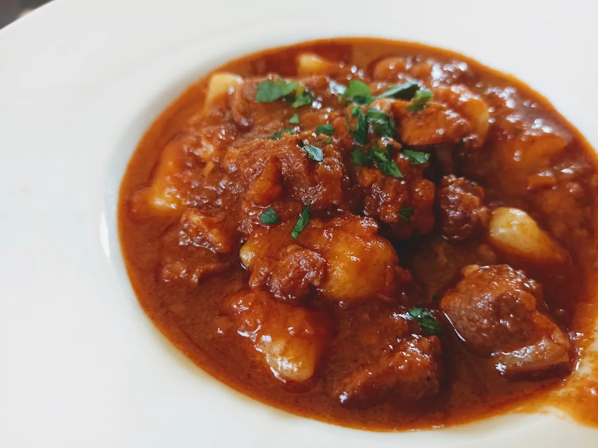
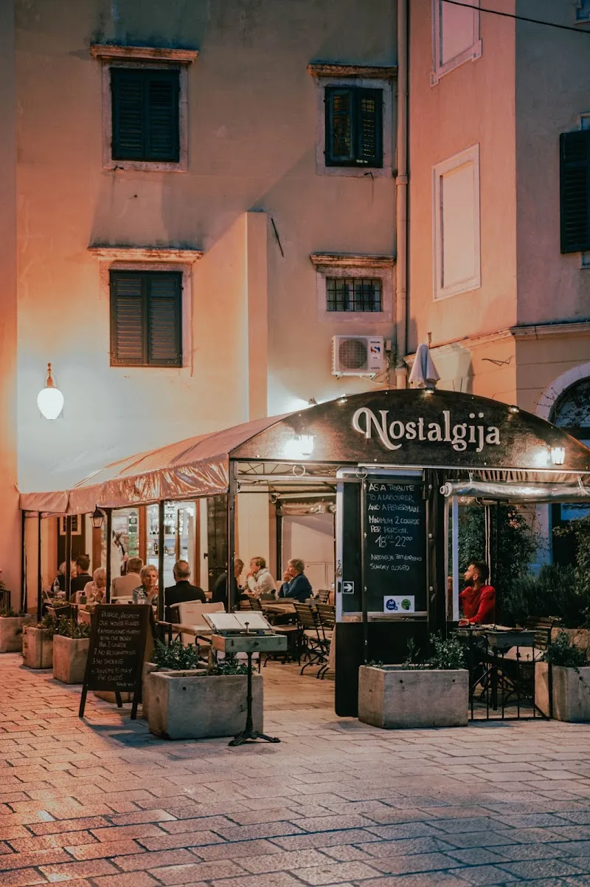
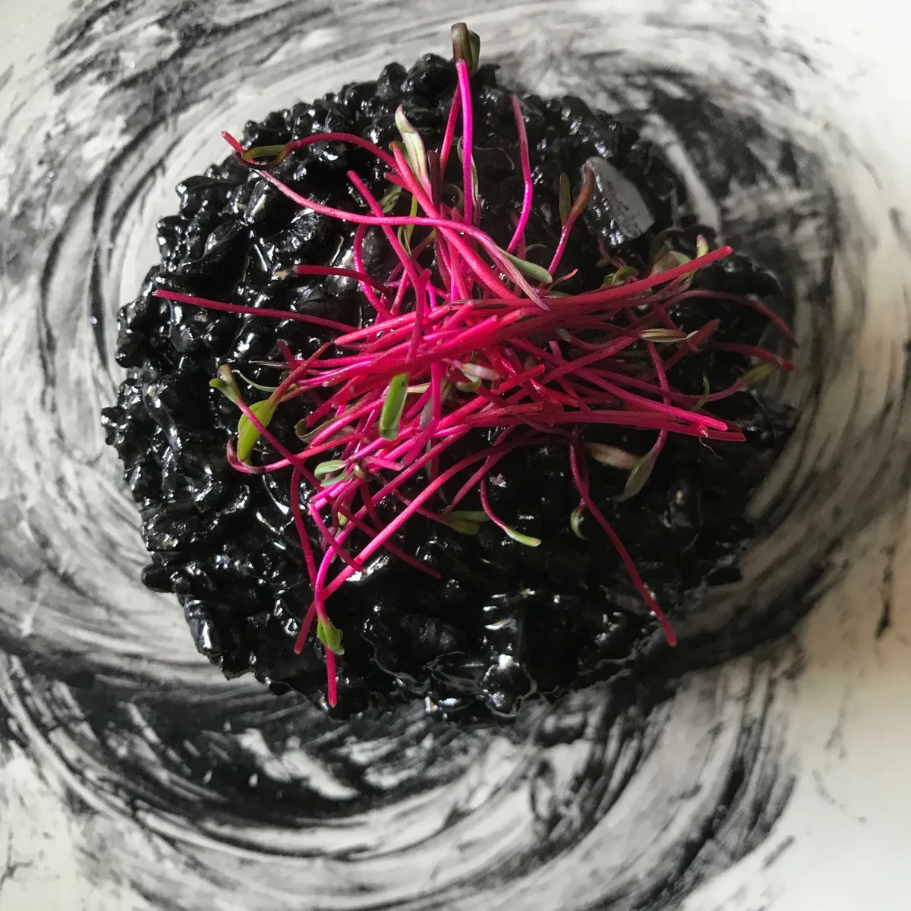
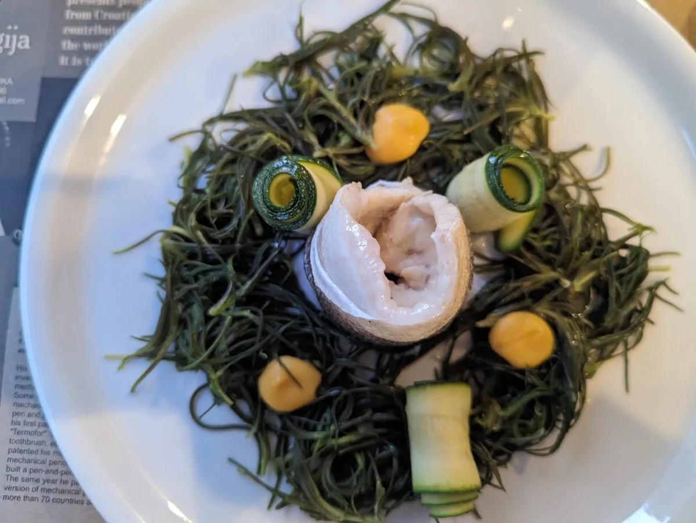
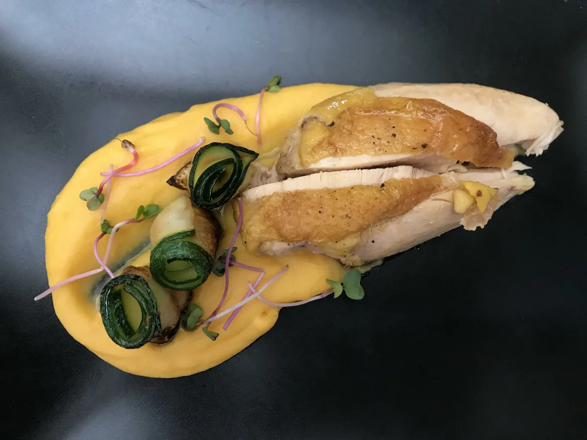
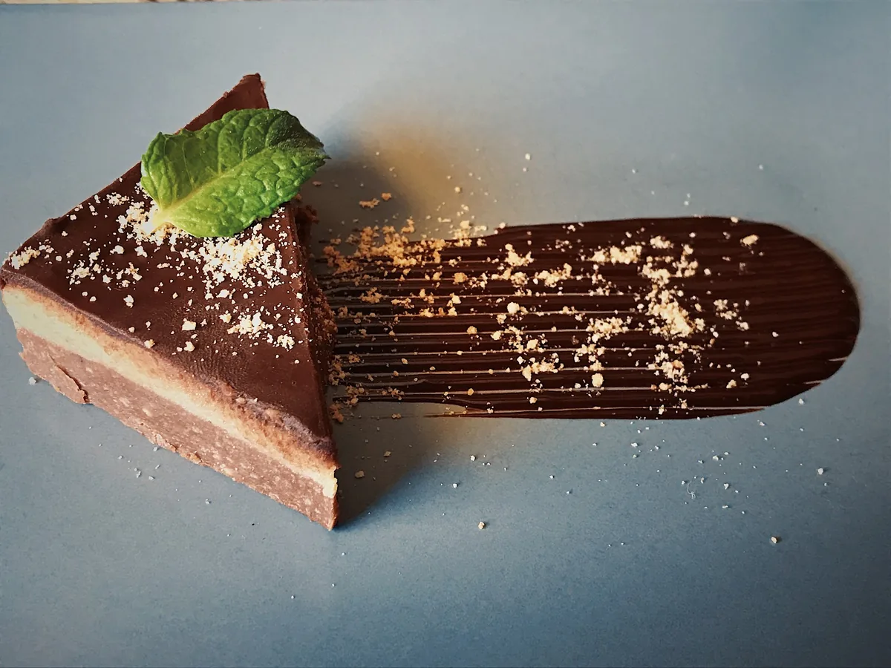

Mediteran kakav je nekad bio, na moderan način. Mali jelovnik, jedanaest jela i dva deserta. Služimo od dva slijeda naviše po osobi.
Mediteran je ondje gdje su sunce, more i masline. Ali Mediteran može biti i na vašem stolu. Nostalgija nudi okus Mediterana kakav je nekad bio, samo na moderan način.
Konoba radi od 2011. u pješačkoj zoni starog Šibenika. Natpis nad ulazom stoji kao posveta: u čast težaku i ribaru.

Počinje se lagano. Sir i sirevi, jetrica i ukiseljena kapula, slane sardele i poma, pašteta od slanih inćuna ili dalmatinski tartar.

Njokice i mrvice, panceta i pura, kozice i bisque, svinjetina i krumpir, brancin i blitva, tele i šalša. Šest jela, ni jedno više.

Bajadera i pijane smokve. Dva deserta, oba po 6 €, oba kuće.

Služimo od dva slijeda naviše po osobi. Stolovi se ne rezerviraju, ne puši se, a toalet je samo za goste.






Ul. Biskupa Fosca 11
22000 Šibenik, Hrvatska
+385 22 570 023
Ne primamo rezervacije.
Stari grad Šibenika, pješačka zona. Katedrala sv. Jakova i riva su nekoliko minuta hoda. Najbliži javni parking je Poljana.